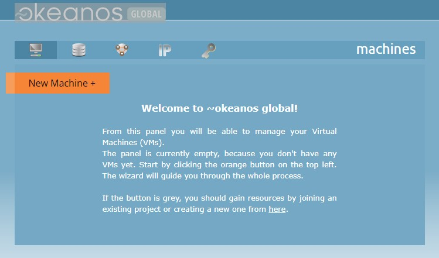
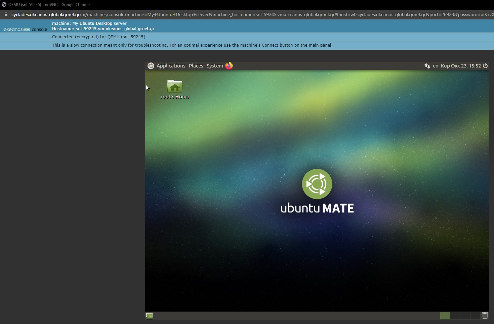

In this part we will be diving further into setting up a testing environment. This might be a tricky part and you could encounter some errors, all links and references can be found in the Github Repository.
The guide focuses on three types of environment deployment:
Virtual Testing Environment
A virtual testing environment consits of setting up a Virtual Machine that runs on a server and deploying your development environment on that machine (i.e an image of the LMS you are testing.)
A Virtual Machine is an emulation of a computer system. Virtual Machines act like normal computers and are based on computer architectures that provide the functionality of a physical machine, however one that is running virtually on a server. This includes advantages such as:
- 1. Reliability: A VM includes virtual resources required to run our software and OS. Everything is virtualized including the Disk Drive, which insures that even if our machine crashes, the host computer is safe.
- 2. Multiple O/S: The VM is capable of running any desired software, regardless of what type of OS the host system is using. This gives us the ability to choose whatever OS we see fits best to our scenarios. (i.e) A requirement might be that the system runs on Linux, a VM insures that you can test that)
This guide will be using Cyclades to deploy a Virtual Machine running on a server. Cyclades is a VMWare provided by Okeanos Global that is free for students, professors and researchers with a valid academic login.
1. Sign up using academic login
Create an account using your Acedemic Login (e.g University Email) and click on Cyclades. You should see the welcome screen as shown below.
2. Create a new VM
Click on New Machine+ to create a new Virtual Machine.
Choose the operating system you prefer and the required hardware specifcations (This depends on the ammount of resources you need to carry the test).
If not sure, just pick an OS and keep the other settings on default. For this guide we will be using Ubuntu Desktop.
Important setup configurations:
3. Open your VM
Hover over your machine in the dashboard and select console. This will open up your VM's GUI and you will be ready to start working on it. 
4. (Optional) Connect via SSH
To connect via SSH Protocol, you will need an SSH Client such a PuTTY, in case you want to access the terminal without a GUI or encountered a problem in the previous step: